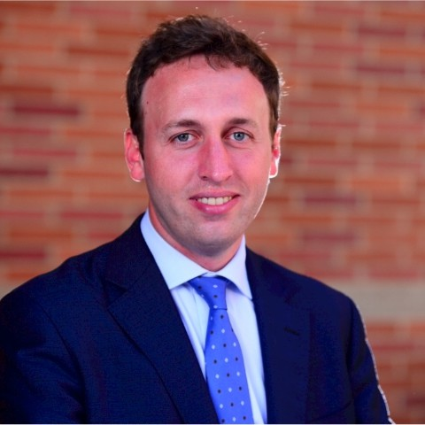

Marco Francisetti resume

Summary:
Executive MBA 2020 professional graduated at UCLA-NUS on September 20 (double degree, 2nd ranked worldwide in 2019 according to The Economist), fully qualified Strategy, M&A and operations lead, management consultant, startupper, and management engineer, with 10 years of experience in leading strategies to facilitate company’s ambitious growth plans. A proven ability to constantly challenge and improve existing organization, processes, and IT systems. Possessing excellent communication skills and having the ability to communicate professionally with clients and colleagues at various levels. International management consulting experience (Australia, UK, Germany, Italy, and France) for leading companies in Insurance, Banking, and Telecommunication sectors.
Current Company: Telstra
Position: Strategy and M&A Lead
Description:
Led the organic growth strategy at Telstra Purple, spearheading strategic thinking and orchestrating a cross-functional work-streams
Led E2E M&A activities including sourcing, due diligence and post M&A planning. Notable achievement: $270M acquisition of Versent reshaping our Cloud capabilities, and aligning well with our priority verticals in BSFI and Government.
Drove omni-channel strategy with focus on partners and digital to ensure profitable growth across B2B segments, reducing channel conflicts and reshaping digital interactions
Achieved a turnaround for mid-market customers through strategic initiatives, business planning, and targeted marketing campaigns
Drove productivity initiatives to hit the EBITDA target of around 15%
Provided executive stakeholder management and coaching for strategy resources
Angel investing: Sydney Angel
Position: Syndicate Lead
Description:
Business angel association investing in early-stage startups, seed and pre-seed
Education:
Executive MBA at UCLA-NUS
Msc Industrial engineering at Politecnico of Turin, Italy
Bsc Industrial engineering at Politecnico of Milan, Italy
My contacts: here